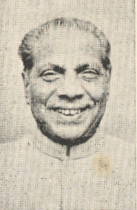

کوٹھا رگھورامیا

مکرر وکھ:
وزارتھ پارلیمانی معاملے, کیبنیٹ وزیر
۱۹۷۳ - ۱۹۷۷
وزارتھ بچاو شہری ایوی ایشن اور سیاحت, کیبنیٹ وزیر
۱۹۷۶ - ۱۹۷۷
وزارتھ کام کرتا ہے۔ اور تھون شر مکان ، جات مکانہ, کیبنیٹ وزیر
۱۹۷۴ - ۱۹۷۶

ترییم جواہرلال نہرو منسٹری
وزارتھ صفای وکیل
نایب وزیر
تسریم جواہرلال نہرو منسٹری
گڈنیوکت گلزاریلال نندا منسٹری
لالبہادر شاستری منسٹری
دویم گلزاریلال نندا منسٹری
گڈنیوکت اندرا گاندھی منسٹری
دویم اندرا گاندھی منسٹری
ترییم جواہرلال نہرو منسٹری

1_Upload_3309.pdf

جواہر لال نہرو
o-Jawaharlal_Nehru.htmlوزیر آزام
۱۶ اپریل ۱۹۵۷ - ۱۰ اپریل ۱۹۶۲

وینگلیل کرشنن کرشنا مینن
o-V._G._K._Krishna_Menon.htmlکیبنیٹ وزیر
۱۶ اپریل ۱۹۵۷ - ۱۰ اپریل ۱۹۶۲
کوٹھا رگھورامیا
o-Kotha_Raghuramaiah.htmlنایب وزیر
۲۲ مئی ۱۹۵۷ - ۱۰ اپریل ۱۹۶۲
جمنی پھرمان
1_Upload_3309.pdf[0]۲۲ مئی ۱۹۵۷مہکم تبدلی